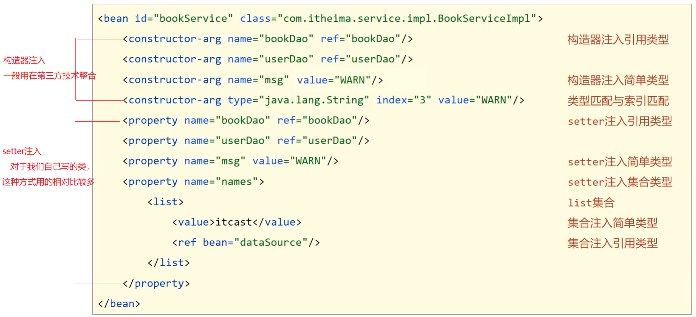

5. 容器¶
容器的创建方式¶
相对路径
ApplicationContext ctx = new ClassPathXmlApplicationContext("applicationContext.xml");绝对路径
ApplicationContext ctx = new FileSystemXmlApplicationContext("${AbsolutePath}");
Bean的三种获取方式¶
// 1. 每次获取的时候都需要进行类型转换 BookDao bookDao = (BookDao) ctx.getBean("bookDao"); // 2. 可以解决类型强转问题，但是参数又多加了一个 BookDao bookDao = ctx.getBean("bookDao",BookDao.class); // 3. 必须要确保IOC容器中该类型对应的bean对象只能有一个 BookDao bookDao = ctx.getBean(BookDao.class);
容器类层次结构¶

BeanFactory的使用¶
BeanFactory是延迟加载，只有在获取bean对象的时候才会去创建
ApplicationContext是立即加载，容器加载的时候就会创建bean对象
ApplicationContext要想成为延迟加载，只需要按照如下方式进行配置
<bean id="bookDao" class="com.itheima.dao.impl.BookDaoImpl" lazy-init="true"/>
小结¶
容器创建的两种方式
ClassPathXmlApplicationContext[掌握]
FileSystemXmlApplicationContext[知道即可]
获取Bean的三种方式
getBean(“名称”):需要类型转换
getBean(“名称”,类型.class):多了一个参数
getBean(类型.class):容器中不能有多个该类的bean对象
上述三种方式，各有各的优缺点，用哪个都可以。
容器类层次结构
只需要知晓容器的最上级的父接口为 BeanFactory即可
BeanFactory
使用BeanFactory创建的容器是延迟加载
使用ApplicationContext创建的容器是立即加载
具体BeanFactory如何创建只需要了解即可。
容器相关
BeanFactory是IoC容器的顶层接口，初始化BeanFactory对象时，加载的bean延迟加载
ApplicationContext接口是Spring容器的核心接口，初始化时bean立即加载
ApplicationContext接口提供基础的bean操作相关方法，通过其他接口扩展其功能
ApplicationContext接口常用初始化类 - ==ClassPathXmlApplicationContext(常用)== - FileSystemXmlApplicationContext
bean相关

依赖注入相关
